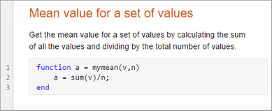
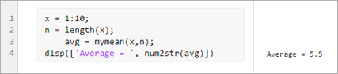
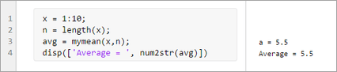

Create Live Functions
Live functions are program files that contain code and formatted text together in a single interactive environment called the Live Editor. Similar to live scripts, live functions allow you to reuse sequences of commands by storing them in program files. Live functions provide more flexibility, though, primarily because you can pass them input values and receive output values.
Create Live Function
To create a live function, go to the Home tab and select New > Live Function.
Open Existing Function as Live Function
If you have an existing function, you can open it as a live function in the Live Editor. Opening a function as a live function creates a copy of the file and leaves the original file untouched. MATLAB® converts publishing markup from the original script to formatted content in the new live function.
To open an existing function as a live function from the Editor, right-click
the document tab and select Open
functionName as Live Function
from the context menu.
Alternatively, go to the Editor tab, click
Save , and select Save As.
Then, set the Save as type: to
, and select Save As.
Then, set the Save as type: to MATLAB Live
Code File (*.mlx) and click Save.
Note
You must use one of the described conversion methods to convert your
function to a live function. Simply renaming the function with a
.mlx extension does not work and can corrupt the
file.
Create Live Function from Selected Code
If you have an existing large live script or function, you can break it into smaller pieces by automatically converting selected areas of code into functions or local functions. This is called code refactoring.
To refactor a selected area of code, select one or more lines of code and on the Live Editor tab, in the Code section, click Refactor. Then, select from the available options. MATLAB creates a function with the selected code and replaces the original code with a call to the newly created function.
Add Code
After you create the live function, add code to the function and save it. For
example, add this code and save it as a function called
mymean.mlx. The mymean function calculates
the average of the input list and returns the results.
function a = mymean(v,n) a = sum(v)/n; end
Add Help
To document the function, add formatted help text above the function definition. For example, add a title and some text to describe the functionality. For more information about adding help text to functions, see Add Help for Live Functions.

Run Live Function
To run the live function, go to the Live Editor tab and click
the Run button. When you run
the live function, the output displays in the Command Window. To run a live function
that requires an input argument or any other setup, configure the
Run button by clicking Run and adding one or more commands. For more
information about configuring the
Run button, see Configure the Run Button for Functions.
and adding one or more commands. For more
information about configuring the
Run button, see Configure the Run Button for Functions.
You also can run the live function by entering the name of the function in the
Command Window or calling it from another code file. For example, create a live
script called mystats.mlx. Add this code that declares an array,
determines the length of the array, and passes both values to the function
mymean.
x = 1:10;
n = length(x);
avg = mymean(x,n);
disp(['Average = ', num2str(avg)])Run the live script. The Live Editor displays the output.

If a live function displays text or returns values, the Live Editor displays the
output in the calling live script, in line with the call to the live function. For
example, add a line to mymean that displays the calculated mean
before returning the
value:
function a = mymean(v,n) a = sum(v)/n; disp(['a = ', num2str(a)]) end
mystats, the Live Editor displays the output for
mymean with the output from
mystats.
Save Live Functions as Plain Code
To save a live function as a plain code file (.m):
On the Live Editor tab, in the File section, select Save > Save As....
In the dialog box that appears, select
MATLAB Code files (UTF-8) (*.m)as the Save as type.Click Save.
When saving, MATLAB converts all formatted content to publish markup.